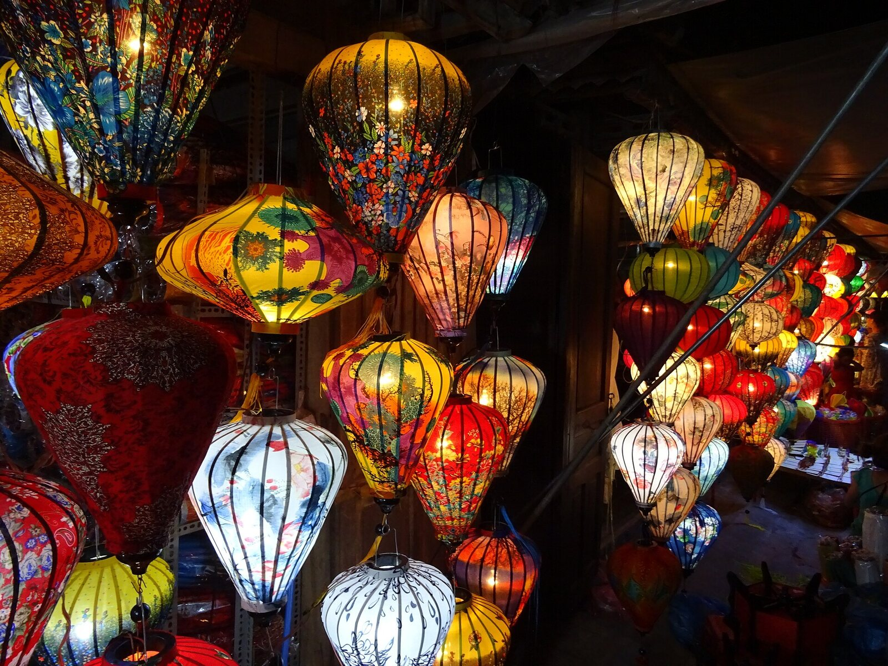
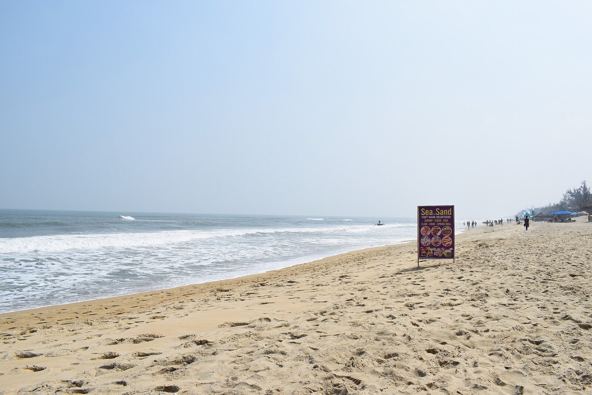

Tiếng Việt
Tiếng Việt English
English 한국어
한국어 中文
中文 Русский
Русский Deutsch
Deutsch
«В каком месяце лучше ехать в Хойан?» – этот вопрос стойка регистрации CGP Luxury Hotel слышит чаще всего, когда гости звонят забронировать номер. Короткий ответ: у каждого месяца в Хойане своя красота. Но если знать погоду, праздники и туристический ритм каждого периода, вы выберете поездку, которая подойдёт именно вам. В этой статье собрано всё, что нужно знать: от погоды по месяцам до самых волшебных ночей Старого города.
Два сезона Хойана
Хойан находится в центральном Вьетнаме, климат здесь тропический муссонный с двумя чёткими сезонами. Понять их – первый шаг в планировании поездки.
Сухой сезон: февраль – август
Солнечно, мало дождей, спокойное море. С февраля по апрель прохладно и приятно, с мая по август жарко, иногда выше 35°C.
Сезон дождей: сентябрь – январь
Много дождей, особенно в октябре и ноябре, когда возможны наводнения. В декабре и январе прохладно и моросит.
 Фото: Steffen Schmitz / Wikimedia Commons, CC BY-SA 4.0
Фото: Steffen Schmitz / Wikimedia Commons, CC BY-SA 4.0Погода по месяцам
Таблица ниже основана на многолетних климатических данных. Реальная погода может отличаться от года к году, поэтому проверьте прогноз примерно за неделю до поездки.
| Месяц | Погода | Туристов | Совет |
|---|---|---|---|
| Январь | Прохладно, морось | Средне | Возьмите куртку, наслаждайтесь тихими улицами |
| Февраль | Прохладно, мягкое солнце, мало дождей | Много на Тэт | Бронируйте заранее, если едете на Тэт |
| Март | Прохладно, ясно | Средне | Прекрасно для прогулок и велосипеда |
| Апрель | Тёплое солнце, спокойное море | Много на праздники в конце месяца | Начало пляжного сезона |
| Май | Солнечно, становится жарче | Средне | Гуляйте рано утром и ближе к вечеру |
| Июнь | Жарко и солнечно | Много, лето | Подходит для семейного летнего и пляжного отдыха |
| Июль | Самый жаркий месяц | Много, лето | В полдень отдыхайте в отеле и купайтесь |
| Август | Жарко, бывают ливни | Много | Следите за прогнозом, берите зонт |
| Сентябрь | Начало сезона дождей | Мало | Цены на номера выгоднее |
| Октябрь | Сильные дожди, возможны наводнения | Мало | Держите планы гибкими |
| Ноябрь | Сильные дожди, возможны наводнения | Мало | Уточните обстановку на ресепшен перед поездкой |
| Декабрь | Прохладно, дождей меньше | Больше к Рождеству и Новому году | Праздничная атмосфера конца года |
Совет нашей стойки регистрацииЕсли можно выбрать только один период, выбирайте март или апрель. Прохладно, мало дождей, море становится красивым, а в Старом городе ещё не так людно, как летом.
Праздники и события года
Помимо погоды, праздники – ещё одна причина выбрать время поездки. В эти дни Старый город особенно волшебен, но и людей больше.
- Ежемесячно, 14-й день лунного месяца
Ночь полнолуния в Старом городе
В ночь полнолуния каждого лунного месяца в Старом городе особая атмосфера: многие дома приглушают электрический свет и зажигают фонари, жители ставят алтари у дверей, а по реке плывут фонарики. Это лучшее время, чтобы увидеть ночной Хойан.
- Первый лунный месяц
Лунный Новый год и Праздник фонарей
На Тэт Старый город ярко украшен цветами, парными надписями и фонарями. В первое полнолуние года (Нгуен Тьеу) в залах собраний проходит множество традиционных культурных мероприятий.
- 15-й день 8-го лунного месяца
Праздник середины осени
Старый город наполнен фонарями, звёздами-фонариками и барабанами танца льва. Детям особенно нравится атмосфера этого праздника.
- Декабрь
Рождество и Новый год
Многие рестораны и кафе украшаются к Рождеству. В новогоднюю ночь Старый город оживлён праздничными мероприятиями.
 Фото: Alexkom000 / Wikimedia Commons, CC BY 4.0
Фото: Alexkom000 / Wikimedia Commons, CC BY 4.0
Фото: Christophe95 / Wikimedia Commons, CC BY-SA 4.0На праздники бронируйте заранееЛунный Новый год, праздники конца апреля – начала мая, лето и конец года обычно полностью раскуплены. Если едете в это время, бронируйте за несколько недель.
Выбор времени по цели поездки
Разным поездкам подходят разные периоды. Вот рекомендации команды CGP Luxury Hotel.
Медовый месяц, парыФевраль – апрель, особенно около полнолуния
Семьи с маленькими детьмиМарт, апрель или летние каникулы с июня по август
Пляжный отдыхАпрель – август, море спокойное и чистое
ФотосъёмкаФевраль – апрель, ясное небо и красивый свет
ЭкономияСентябрь – ноябрь, цены на номера выгоднее
Долгое проживание, удалённая работаЯнварь, март или сентябрь, тихие улицы

Фото: Mig Gilbert from Brighton / Wikimedia Commons, CC BY-SA 2.0Стоит ли ехать в сезон дождей?
Многие сомневаются, ехать ли в Хойан в сезон дождей, но у этого времени есть свои прелести. В Старом городе меньше туристов, воздух прохладный, цены на номера ниже, а Хойан под дождём обладает тихой, поэтичной красотой.
Что подготовить
- Лёгкий дождевик, зонт и нескользящую обувь.
- Гибкий план: в дождливые дни – музеи, старинные дома, кафе и кулинарные мастер-классы.
- Следите за прогнозом погоды и информацией ресепшен об уровне воды в реке.
Если случилось наводнение
В октябре и ноябре после сильных дождей прибрежная часть Старого города вдоль реки Хоай может быть затоплена несколько дней. CGP Luxury Hotel расположен на улице Ли Тхыонг Киет, примерно в 1 км от Старого города. В непогоду ресепшен будет держать вас в курсе, предложит альтернативные планы и поможет организовать безопасный транспорт.
Дождливый день в отелеДождливый день может стать идеальным днём отдыха: ванна, книга у окна, горячий чай в садовом кафе и вкусные блюда кухни CGP.


Советы по бронированию по сезонам
- Высокий сезон
Бронируйте за несколько недель
Тэт, праздники конца апреля, лето и конец года – время, когда отель заполняется быстрее всего, особенно категории, представленные одним-двумя номерами, например номера с ванной или с выходом к бассейну.
- Низкий сезон
Гибко и выгодно
С сентября по ноябрь выбор номеров шире. Это хорошее время попробовать длительные пакеты, например Slow Living Stay или Работа и отдых.
- В любое время
Бронируйте напрямую на сайте
Бронируя на сайте отеля, вы оплачиваете онлайн через шлюз AsiaPay картой Visa, Mastercard или JCB и можете указать особые пожелания, чтобы ресепшен всё подготовил.
Идеального времени для поездки в Хойан не существует, есть только время, которое подходит именно вам.Стойка регистрации CGP Luxury Hotel
Частые вопросы
Какой месяц лучший для поездки в Хойан?
Лучшим считается период с февраля по апрель: прохладно, мало дождей, подходит для любых занятий.
Когда бывает ночь полнолуния в Старом городе?
В 14-й день каждого лунного месяца. Перед поездкой сверьтесь с лунным календарём, чтобы выбрать правильную дату.
Стоит ли ехать в Хойан в октябре или ноябре?
Можно, но планы должны быть гибкими из-за возможных сильных дождей и наводнений. Зато на улицах тихо, а цены ниже.
Не слишком ли жарко в Хойане летом?
С июня по август довольно жарко. Гуляйте рано утром и ближе к вечеру, а в полдень отдыхайте и купайтесь в бассейне отеля.
Выбрали даты?
В солнечный или дождливый сезон, CGP Luxury Hotel всегда готов встретить вас уютным номером и заботливой командой 24/7.